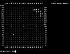
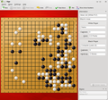
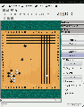
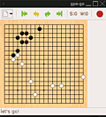
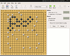

Go
Hinweis:
Die gleichnamige Programmiersprache ist im Artikel Go beschrieben.
Zum Verständnis dieses Artikels sind folgende Seiten hilfreich:
Go, auch bekannt als wéiqí (China), igo (Japan) oder baduk (Korea), ist ein mehr als 4000 Jahre altes strategisches Brettspiel für zwei Spieler und stammt ursprünglich aus China. Obwohl es sich deutlich von Schach unterscheidet, wird es wegen des großen Strategie-Anteils bei beiden Spielen oft mit diesem verglichen.
Ziel des Spieles ist es, sehr verkürzt ausgedrückt, mit seinen Spielsteinen einen möglichst großen, freien Bereich des Spielfeldes abzustecken. Dabei kann man auch die Steine des Gegners umzingeln, um so dem Gegner einen oder mehrere Steine abzunehmen ("Gefangene"). Je nach gewünschter Dauer des Spieles gibt es Abwandlungen mit unterschiedlichen Regeln und Brettgrößen. Die Standardbrett besitzt 19x19 Linien. Kleinere Varianten haben zum Beispiel 13x13, 9x9 oder 5x5 Linien.
Jeder Spieler setzt abwechselnd einen Stein. Die Steine dürfen dabei immer nur auf die Schnittpunkte zweier Linien gestellt werden. Wenn ein oder mehrere Steine umzingelt sind, werden sie vom Spielfeld entfernt und dem Gegner als "Gefangene" gegeben. Beim Umzingeln kommt es nur auf vertikale und horizontale Steine an – Diagonalen spielen keine Rolle. Mehr zu den unterschiedlichen Go-Regeln und deren nationalen Ausprägungen findet man in der Wikipedia: Go-Regeln bzw. am Ende dieses Artikels bei den weiterführenden Links.
Es gibt weltweit circa 100 Millionen Go-Spieler, von denen die meisten aus Asien stammen. Bei uns ist dieses Spiel noch relativ unbekannt, beginnt aber mehr und mehr Anhänger zu gewinnen.
Go wird als sehr faszinierendes Spiel angesehen, da es ähnlich wie Schach auf eine geschickte Taktik ankommt und man weit im voraus denken muss, um die möglichen Entwicklungen des Spieles zu berücksichtigen. Letzteres ist bei Go so kompliziert, dass es auch sehr schwer ist, gute Go-Programme zu schreiben. So gibt es zum Beispiel 4,63 × 10170 mögliche Stellungen auf einem Standard-Go-Brett, bei Schach sind es im Vergleich gerade mal 1043 . Das ist auch der Grund dafür, dass es im Gegensatz zu Schach erst ein Programm (AlphaGo) gibt, das "intelligenter" als ein menschlicher Gegenspieler ist.
Dennoch haben sich einige recht respektable Go-Programme entwickelt, welche durchaus eine spannende Partie bieten können.
GNU Go¶

GNU Go  kann durch das folgende Paket installiert [1] werden:
kann durch das folgende Paket installiert [1] werden:
gnugo (universe)
 mit apturl
mit apturl
Paketliste zum Kopieren:
sudo apt-get install gnugo
sudo aptitude install gnugo
GNU Go kann für zwei Dinge benutzt werden: Einmal als Kommandozeilenprogramm [2], um Go direkt mit GNU Go auf der Konsole bzw. in einem Terminal spielen zu können, zum anderen als KI-Server, also als Gehirn bzw. Computergegner für einige grafische Go-Programme.
Die Installation des Pakets lohnt sich also selbst dann, wenn man Go nicht auf der Kommandozeile spielen möchte. CGoban, qGo und Quarry benötigen GNU Go, damit man gegen einen Computergegner spielen kann.
Um mit GNU Go auf der Kommandozeile spielen zu können, muss man nur den Befehl:
gnugo
ausführen. Das Spiel beginnt dann direkt mit einem 19x19 Feld und man selbst startet mit den schwarzen Steinen (X) und der Gegner mit den weißen (0). Man setzt einen Stein indem man die gewünschte Koordinate eingibt. Um einen Stein auf den Schnittpunkt von den Linien S und 14 zu setzen, gibt man "S14" ein. Es gibt noch einige Kommandos während des Spiels, die man sieht, wenn man anstelle einer Koordinate das Wort "help" eingibt.
Außerdem gibt es noch einige nützliche Startparameter wie "--color black|white" , je nach dem mit welcher Farbe man beginnen will oder "--boardsize 13", wenn man nur mit einem 13x13 Feld spielen möchte.
Mehr dieser Parameter findet man in der Manpage von gnugo.
CGoban¶
 CGoban ist eine grafische Oberfläche, um Go zu spielen. Es wird zwar nicht mehr offiziell weiterentwickelt, funktioniert aber hervorragend.
CGoban ist eine grafische Oberfläche, um Go zu spielen. Es wird zwar nicht mehr offiziell weiterentwickelt, funktioniert aber hervorragend.
Es kann durch das folgende Paket installiert [1] werden:
cgoban (universe)
mit apturl
Paketliste zum Kopieren:
sudo apt-get install cgoban
sudo aptitude install cgoban
CGoban bietet die Möglichkeit eines Hot-Seat Duells gegen einen anderen Menschen, online über einen NNGS- oder IGS-Server zu spielen oder wenn man GNU Go installiert hat, mit Hilfe von diesem lokal gegen einen Computergegner zu spielen.
Über die Schaltfläche "New Game" kommt man zum Hot-Seat Modus, um gegen einen anderen Menschen lokal zu spielen und über "NNGS" und "IGS" zum Online-Modus.
Über "Go Modem" schließlich kann man unter anderem gegen GNU Go spielen. Dazu wählt man für eine der beiden Parteien "Human" und für die andere "Program". Wenn man GNU Go aus den Paketquellen installiert hat, gibt man nun als Pfad:
/usr/games/gnugo --mode gmp --quiet
an und kann somit gegen die KI von GNU Go spielen.
Kigo¶

Eine Umsetzung speziell für die Desktop-Umgebung KDE ist Kigo . Installiert werden kann es aus den offiziellen Paketquellen:
kigo (universe)
mit apturl
Paketliste zum Kopieren:
sudo apt-get install kigo
sudo aptitude install kigo
Weitere Informationen sind dem Handbuch  zu entnehmen.
zu entnehmen.
qGo¶

qGo ist ein Qt-basiertes graphisches Interface, um Go zu spielen. Trotz der Tatsache, dass es auf Qt basiert, besitzt es keine KDE-Abhängigkeiten, was viele Nutzer freuen dürfte, da qGo eines der ausgereiftesten Go-Programme ist.
qGo erlaubt das Spielen gegen Online-Gegner über zahlreiche unterschiedliche Go-Internetserver, das Spielen gegen einen menschlichen Gegener am selben Computer und mit Hilfe von GNU Go das Spielen gegen einen Computer-Gegner.
qGo kann durch das Paket:
qgo (universe)
mit apturl
Paketliste zum Kopieren:
sudo apt-get install qgo
sudo aptitude install qgo
installiert [1] werden.
gpe-go¶
 gpe-go besitzt eine GTK-basierte graphische Oberfläche. Go kann hiermit ausschließlich gegen einen anderen menschlichen Spieler am gleichen PC gespielt werden.
Es kann durch das Paket:
gpe-go (universe, bis einschließlich Ubuntu 13.10)
mit apturl
Paketliste zum Kopieren:
sudo apt-get install gpe-go
sudo aptitude install gpe-go
installiert [1] werden.
Quarry¶

Mit Quarry können Brettspiele wie Reversi, Amazons oder Go zu zweit oder alleine an einem lokalen Computer gespielt werden, wobei für einen Go-Computerspieler GNU Go vorausgesetzt wird. Allerdings wird Quarry nicht mehr weiterentwickelt.
Installiert [1] werden kann Quarry durch das Paket:
quarry (universe)
mit apturl
Paketliste zum Kopieren:
sudo apt-get install quarry
sudo aptitude install quarry
Nach dem Start von Quarry muss man erstmal auf "Einstellungen → GTP Engines → Hinzufügen" gehen. Als Command line gibt man dies an:
gnugo --mode gtp --quiet
und das Screen name-Feld lässt man so wie es ist. Nun sollte GNU Go erkannt werden, wenn man es installiert hat. Im Hauptmenü kann man nun unter "New Game → Go" ein Go-Spiel entweder gegen einen anderen Menschen am selben PC oder gegen die KI von GNU Go starten.
Andere Go-Werkzeuge¶
Eine aktuelle Liste von Go-Programmen oder Werkzeugen bietet die British Go Association.
sgf2dg¶
sgf2dg kann mit dem Paket:
sgf2dg (universe)
mit apturl
Paketliste zum Kopieren:
sudo apt-get install sgf2dg
sudo aptitude install sgf2dg
installiert [1] werden. Es ist ein Kommandozeilen-Programm, welches es einem erlaubt, sgf-Spielstände von Go-Spielen in Diagramme im TEX- oder aber auch PDF-Format zu konvertieren.
sgf steht für "Smart Game Format" und ist das Standardformat von Go-Savegames. Alle hier vorgestellten Programme mit Ausnahme von gpe-go unterstützen das Abspeichern eines Spieles im sgf-Format.
Go Online Spielen¶
Go kann mit einigen der oben genannten Programme über IGS- oder NNGS-Server online gespielt werden oder über KGS.
Auf der KGS-Seite kann man – wenn man einen Browser mit Java-Plugin besitzt – direkt online spielen. Außerdem findet man auf der Seite noch das Java-Programm CGoban 3 (auch hier wird Java benötigt). CGoban 3 besteht aus einem Clienten für den KGS-Go-Server und einem Editor für SGF-Go-Dateien. Auch wenn es vom gleichen Entwickler wie CGoban ist, haben die beiden Programme nicht viel gemeinsam. CGoban 3 ist ausschließlich zum Online-Spielen auf KGS-Servern ausgelegt.
- Erstellt mit Inyoka
-
 2004 – 2017 ubuntuusers.de • Einige Rechte vorbehalten
2004 – 2017 ubuntuusers.de • Einige Rechte vorbehalten
Lizenz • Kontakt • Datenschutz • Impressum • Serverstatus -
Serverhousing gespendet von